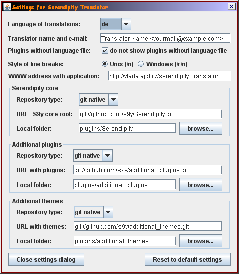

Users' guide
Settings (shortcut key "S")

First it is recomended to set up the programm. Click on "Settings" (shortcut key "s"). Set the language you want to translate to. Set also the name and e-mail of translator. It will be used only to be included in translated files, to let know further translators who did the translations before.
do not show plugins without translate file - some plugins, especially templates, have no language files, no messages to translate. In the list of plugins, they are only for your information. Checking this option will hide them in the list.
WWW address with application - Here you can specify our own server (folder) that holds newest version of application.
Main window
"Update plugin list" button (shortcut key "U")
After clicking, the application will connect to the internet repository (the same as Spartacus uses), download the list of plugins and will try to know, which plugin includes translated language files. In this moment the application does not know the content of language files. It only knows, that some translated file exists. To prospect language files it is necessary to download them by clicking on following button.
"Download files" button (shortcut key "D")
The program will download language files - english files and also the files in selected local language (see Settings) and will compare them by content. Downloading can be lengthy, therefore there is progress bar that informs you about the downloading progress.

In version 1.6 was added feature, that downloads only changed files. Downloading is now a bit faster. Also you can now stop the downloading by bancel button. Since mentioned version, documentation files (documentation_xx.html, readmes, ChangeLogs) are also downloaded to enable you to translate also this documentation. See section Documentation translations.
"Compare files by content" button (shortcut key "C")
If there comes up a situation when files are not compared (e.g. after you translate documentation files), you can force the comparison by clicking this button. The programm compares locally stored files, nothing is downloaded from internet.
Plugin table
Translation window
In the upper part of translation window, there are three fields - the name of edited message, the message in english and the message in local language.
Local language messages can be edited in the table with messages and also in the field with local message.
In the status bar, there is "original" x "modified" message. It signalises if the file has been changed or not. If the status is "modified", it is possible to save the file. The file will be stored in "plugins_translated" directory.
The translation table rows can be of 4 colors:
- red - the message is not translated in local language
- green - the message exists in local language, but it is the same as in the english language file. It is highly probable, that the translator who translated the file before you, did the copy of messages, but did not translate all of them.
- yellow - the message exists in local language, but not in english. It is possible that it was removed in newer version of plugin. If we want to remove it from the translated file, we will delete it. Blank messages are not written in the language file during saving.
- white - the message exists both in english and local language file and they are different. It means translated message. Completely translated files contain only white and green messages. Sometimes the translation is the same as the english message.
Translation of documentation
Documentation for plugins can be stored in various files. It should be placed in file named "documentation_en.html", but many plugins have only readmes "readme, readme.txt, pluginReadme.txt, credits.txt" or ChangeLogs instead. All of these files are downloaded and treated as documentation files.
As the format of documentation files varies a lot, you must inspect it on our own and make its translation in external text editor.
If you want to profit from benefits of tracking the status of documentation and of packing new files for publishing, you should only save your translated documentation under the plugin folder in "plugins_translated" directory and save it as "documentation_xx.html" where replace "xx" by language abbreviation.
From version 1.9 the application creates automatically the UTF-8 version of documentation files, if it does not exist. However it has limitations. The UTF-8 files can be different in small things. The application converts the html meta tag defining the charset to utf-8, to display the documentation file correctly in utf-8 encoding. Also the links to local files (e.g. images) are prefixed with "../" co link to original file. Remote links (starting with "http://" or "mailto:") are not prefixed. All other changes in utf-8 files must be done manually.
The documentation files in utf-8 encoding are created after clicking on "export translated files to zip file" in "translations" menu.
How the program works internally
Filling in messages already set elsewhere
- In some plugins, especially templates there are some messages that are repeated (copied) from other plugins (mostly templates) frequently. The application stores all messages into its internal database during each comparison. And then if it finds untranslated message whose key is already in database, it fills in the translated message. This supports also the coherency of translation. There is less chance to translate logically the same messages differently.
Directories it creates
- plugins - directory with downloaded language files. These files change only after clicking the "Download files" button and downloading the up to date files. It contains the same language files that are available in online plugins repository.
- plugins_translated - There is the result of your translation effort. The publishing of translated files is not automatic. It is up to you to publish them, mainly on serendipity forum (board.s9y.org). The plugins are sorted in subdirectories in groups, that are important for serendipity developpers.
Language file format
- header - it is automatically generated, it contains the information about translation version, translator name (it is taken from Settings dialogue) and date of translation
- The file that is created from the scratch, the first version of the translation, has the messages sorted in the same order as in the english file.
- The file, that was already translated, it means when we make only the update of the file, has the same ordering of messages as the original file. The parts that are not changed, have the same format in both files. New messages are appended at the end of the file. The program tries to preserve the format of messages. It means mainly the caracters between the message name and its content in @define function. So when the main part of language file has the format "@define('BLABLAH',[tab]'blahblah message');" also the new messages will have ",[tab]" in the right place. Also the padding to some position is supported, e.g. if 'blahblah message' starts mostly on column 50, the new messages will start also on column 50.
Export to zip file
- Only plugins that are completely translated are exported into zip file. It means that "Translated status" equals to "ok", and plugin is not translated yet, it means when "Status" is not "ok" or if messages in translated file are not the same as messages in downloaded file.
- Only files of current language are exported.
- Documentation files of current language are exported only if documentation status equals "local".
- Files are exported both in local encoding and in UTF-8 encoding.
- Files are organized in one zip archive in subdirectories according to their type - internal x external, plugins x templates.
Troubleshooting
- All error messages are in file "error.log"
- If you encounter any problem, send this error log to author of translation utility.
Changelog
- 1.0
Prerelease version - the main function were tested (plugin list downloading, basic translations)
- 1.1
More info about translations was added (e.g. number of messages in translated file), graphical enhancement (the state of messages - translated/not translated)
- 1.2
Changes in user interface (menu bar, settings in its proper dialogue, dialogue "about", license dialogue, help dialogue), formating of output file (e.g. resolving the new messages format)
- 1.3
Resolving plugin list from web interface of snv/cvs repository. Export of translated files into zip archive. Statistics added.
- 1.4
Added comparing of files after plugin list update. Reporting error messages into file added.
- 1.5
Fixed errors with (not)downloading some files. Added filling in the messages that were already used in other plugins (templates).
- 1.6
Added tracking of documentation files.
Added automatic updater of application.
Added function of downloading changed/new files only -> performance enhamncement.
Added possibility of cancelation of downloading.
- 1.7
Fixed error in (not)downloading documentation files. Download dialog - saving its position + visibility enhancement.
- 1.8
Added check of availability of cvs/svn servers. Error message is displayed if they are not reachable.
- 1.9 - 2011/07/10
Fix to download also the files that are old only several seconds.
Fix of exporting files that have identical content, but differ in new line style (\n - unix style or \r\n - windows style). They are now supposed to be identic.
Saving of downloaded files with original timestamp - this avoids false marking of documentation files as not translated.
Added automatic conversion of documentation files into UTF-8 version.
- 1.10
(dosud nevydáno) Oprava adresy, na kterou se pøipojuje pøi kontrole spojení na berlios.de.
Pøidáno stahování souborù "todo", "copy*", "author(s)" jako dokumentace.